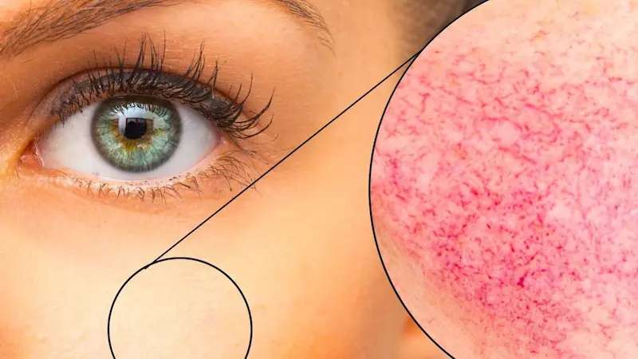
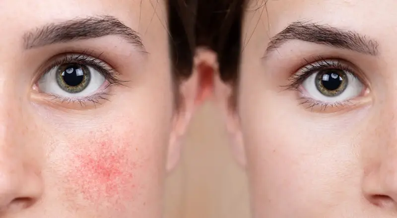
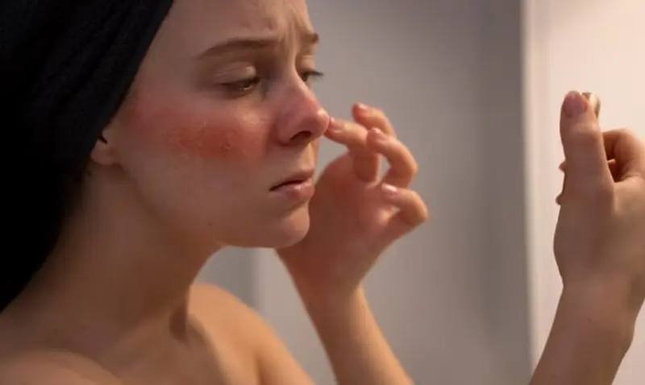
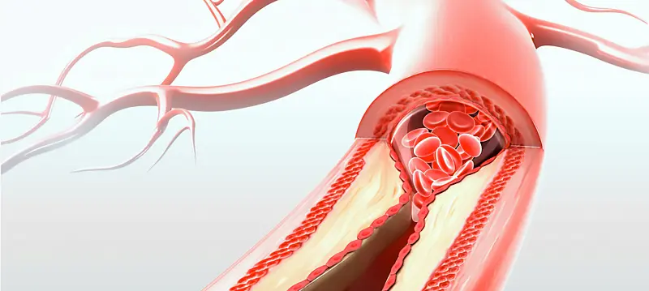

Rozaceea nu este doar o „piele sensibilă”, ci o afecțiune cronică a vaselor de sânge, ce necesită un control riguros și protecția barierei cutante.Ce este rozaceea?
Rozaceea este o afecțiune inflamatorie cronică ce afectează predominant vasele de sânge de la nivelul feței. Spre deosebire de simpla sensibilitate, aceasta reprezintă o tulburare persistentă a microcirculației, care se manifestă prin înroșirea bruscă a feței (flushing), eritem permanent și vinișoare vizibile (telangiectazii).
Este esențial să distingem rozaceea de acnee. În cazul rozaceei, roșeața este cauzată de dilatarea capilarelor, nu de blocarea porilor. În condițiile climatice din România, cu veri toride și ierni geroase, tenul cu rozacee este constant sub stres, ceea ce, fără o îngrijire adecvată, poate duce la progresia bolii către stadiul papulo-pustulos.
Semnele rozaceei și reactivitatea vasculară
Simptomele principale includ senzația de „față care arde” după un ceai fierbinte, mâncare condimentată sau un pahar cu vin. Cu timpul, roșeața nu mai dispare de la sine, devenind un companion permanent. Pielea în zonele afectate (pomeți, nas, bărbie) este adesea fierbinte la atingere și prezintă o senzație de strângere.
Acutizările sunt adesea legate de o barieră cutantă deteriorată. Apa dură și aerul uscat din spațiile climatizate subțiază stratul protector, lăsând vasele de sânge și mai expuse factorilor externi. Îngrijirea corectă vizează „antrenarea” peretelui vascular și calmarea imediată a inflamației neurogene.

Reguli de îngrijire în rozacee
Ingrediente care calmează și întăresc vasele de sânge
| Ingredient | Acțiune |
|---|---|
| Acid Azelaic | Standardul de aur: reduce inflamația, calmează roșeața și combate erupțiile |
| Niacinamidă (Vitamina B3) | Întărește bariera cutantă, scade reactivitatea și calmează senzația de arsură |
| Extract de Centella (CICA) | Calmează instantaneu iritația, oferă o senzație de răcoare și ajută la regenerare |
| Troxerutin / Castan sălbatic | Venotonice: fortifică pereții capilari și reduc vizibilitatea vinișoarelor roșii |

Ce este INTERZIS în rozacee?
Cum reducem reactivitatea vasculară?
În cazul rozaceei, vasele de sânge își pierd capacitatea de a se contracta la timp, rămânând într-o stare dilatată. Acest lucru duce la senzația de „față care arde” și la o roșeață persistentă. Regula principală: răcorire și protecție maximă — utilizați produse cu filtre fizice și evitați ingredientele active agresive în perioadele de acutizare.
Căutați produse cosmetice cu lipide fiziologice (ceramide), care „repară” breșele din bariera cutantă. Acest lucru va reduce sensibilitatea pielii la iritanții externi, precum vântul sau praful, și va ajuta vasele de sânge să rămână sub protecția sigură a epidermului, reducând frecvența puseelor de roșeață.

Factorii externi și stilul de viață local
Pentru locuitorii din regiune, rozaceea se acutizează adesea din cauza obiceiurilor alimentare și a climatului. Mâncărurile condimentate, murăturile și vinul roșu tradițional dilată vasele de sânge. Canicula estivală combinată cu soarele activ necesită purtarea obligatorie a pălăriilor cu boruri late și utilizarea ecranelor solare minerale.
Iarna, în regiunea noastră, este critic să protejăm fața de vântul uscat și ger cu ajutorul unor „cold-creams” dense (dar fără uleiuri comedogene). Rețineți: rozaceea este un stil de viață, unde controlul factorilor declanșatori externi joacă un rol la fel de important ca și îngrijirea farmaceutică corect aleasă.
Întrebări frecvente despre rozacee
Se poate vindeca definitiv rozaceea?
Rozaceea este o afecțiune cronică ce nu poate fi „vindecată” permanent, dar poate fi controlată cu succes pentru a obține o remisie de lungă durată. Prin utilizarea acidului azelaic și evitarea factorilor declanșatori, se poate menține un ten curat, fără roșeață vizibilă.
Pot cremele să elimine vinișoarele vizibile (cuperoza)?
Din păcate, produsele cosmetice nu pot „șterge” capilarele care sunt deja dilatate. Cremele cu venotonice (troxerutin, castan) pot doar să diminueze roșeața difuză și să prevină apariția unor noi vase de sânge. Pentru eliminarea rețelei vasculare vechi, sunt necesare proceduri laser în clinicile dermatologice.
De ce se agravează rozaceea după expunerea la soare?
Radițiile ultraviolete sunt inamicul principal al vaselor de sânge. În condițiile verilor toride, soarele provoacă eliberarea mediatorilor inflamatori și dilatarea capilarelor. Fără un SPF mineral, fața se înroșește rapid și poate apărea senzația intensă de căldură (flushing).
Ajută dieta în controlul rozaceei?
Da, alimentația influențează direct starea vaselor de sânge. Pentru a controla rozaceea, se recomandă limitarea consumului de mâncăruri picante, băuturi foarte fierbinți și vin roșu, deoarece acestea provoacă un flux rapid de sânge către față și declanșează puseele de roșeață.